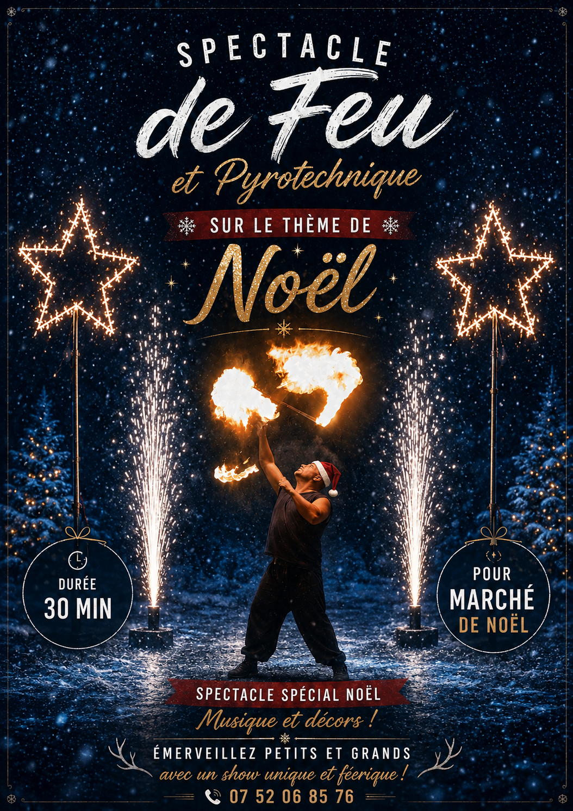
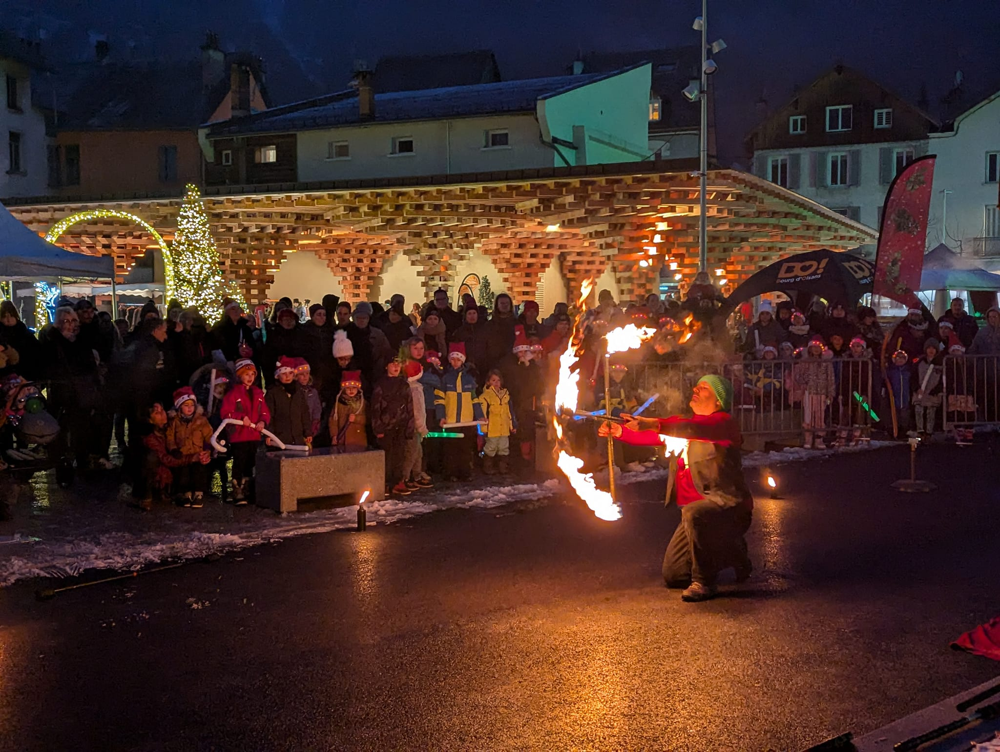
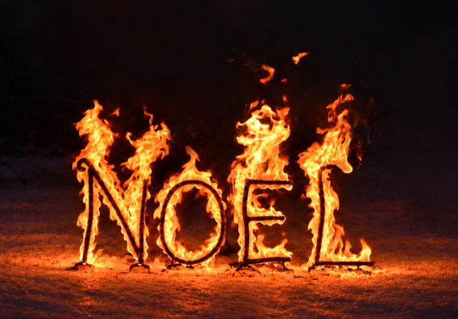

Animation marché de Noël : spectacle de feu et magie de Noël
Un marché de Noël prend une toute autre atmosphère lorsque la nuit tombe,
que les lumières s'allument et que les visiteurs se retrouvent plongés
dans une ambiance chaleureuse et féérique.
Le feu peut venir prolonger cette magie et créer un véritable moment
d'émerveillement pour petits et grands. Spectacle de feu, jonglage enflammé,
décors scintillants et effets visuels peuvent s'intégrer naturellement
à l'ambiance de votre marché.
Je propose des animations de Noël adaptées aux communes, offices de tourisme,
associations et organisateurs de marchés, avec des formats pouvant aller
d'une intervention ponctuelle à un véritable spectacle.
Un spectacle de feu aux couleurs de Noël
Imaginez un spectacle lorsque la nuit est tombée, au milieu des illuminations
et des chalets du marché.
Le feu, la musique et les costumes sont adaptés à l'univers de Noël
pour créer un spectacle chaleureux et féérique, pensé pour émerveiller
petits et grands.
Jonglage de feu, agrès enflammés, effets visuels et pyrotechnie se mêlent
au rythme des musiques de Noël pour créer un véritable moment de magie
au cœur du marché.

Des animations de feu à la carte
Il n'est pas nécessaire de prévoir un spectacle complet pour faire entrer
le feu dans votre marché de Noël.
Plusieurs prestations peuvent être proposées seules ou combinées pour créer
une animation adaptée à votre événement, à sa programmation et à votre budget.
Jonglage de feu
Massues, bâtons, bolas et autres agrès enflammés permettent de proposer
une animation dynamique et visuelle.
Le jonglage de feu peut intervenir à différents moments du marché
ou constituer une animation à part entière, en apportant une présence
artistique originale au milieu des illuminations et des décorations de Noël.

Des décors enflammés pour prolonger la magie de Noël
Le feu peut aussi devenir un véritable élément du décor.
Une étoile de Noël scintillante, un sapin enflammé ou d'autres créations
lumineuses peuvent être installés pour renforcer l'ambiance du marché
lorsque la nuit tombe.
Ces décors peuvent mettre en valeur un espace particulier, accompagner
les chalets ou créer un point de rassemblement autour duquel les visiteurs
pourront profiter de l'ambiance de Noël.

Des effets de feu pour émerveiller les visiteurs
Quelques effets de feu peuvent également venir ponctuer la soirée
et créer des moments de surprise.
Une apparition de flammes, un effet lumineux ou une intervention ponctuelle
peut attirer les regards et apporter une touche de magie supplémentaire
au marché.
Ces effets peuvent notamment accompagner l'arrivée du Père Noël,
l'illumination d'un espace ou un autre temps fort de votre événement.

Une ambiance pensée pour toute la famille
Un marché de Noël rassemble plusieurs générations. L'animation doit donc
pouvoir émerveiller les enfants comme les adultes.
Les spectacles et prestations sont pensés dans une ambiance chaleureuse,
féérique et familiale, avec des effets visuels qui attirent le regard
sans créer une atmosphère inquiétante.
L'objectif est de faire du feu un élément de la magie de Noël et de créer
un souvenir que les visiteurs pourront partager en famille.
Une animation qui s'intègre à votre marché
Chaque marché de Noël possède son propre univers : illuminations, chalets,
musique, animations pour les enfants et présence éventuelle du Père Noël.
La prestation peut être adaptée à votre programmation et à l'ambiance
que vous souhaitez créer.
Que vous organisiez un petit marché de Noël local ou un événement plus important,
nous pouvons imaginer ensemble une animation qui trouve naturellement sa place
au milieu de votre marché.
Une prestation préparée avec soin
Chaque prestation de feu est préparée en fonction du lieu, de son environnement
et de ses contraintes.
Les installations et les effets sont choisis en conséquence afin de proposer
une animation adaptée aux conditions de votre marché.
La préparation permet également de réfléchir à l'emplacement du spectacle,
à la visibilité du public et à son intégration avec les autres animations de Noël.
Faites entrer la magie du feu dans votre marché de Noël
Vous organisez un marché de Noël et souhaitez proposer une animation originale
aux visiteurs ?
Présentez-moi votre projet, le lieu, la date et l'ambiance que vous souhaitez créer.
Nous pourrons imaginer ensemble une prestation adaptée à votre marché et à votre budget.
Réponse personnalisée et devis gratuit.